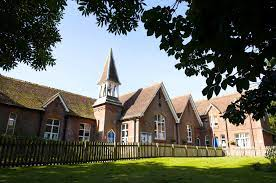
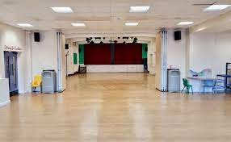
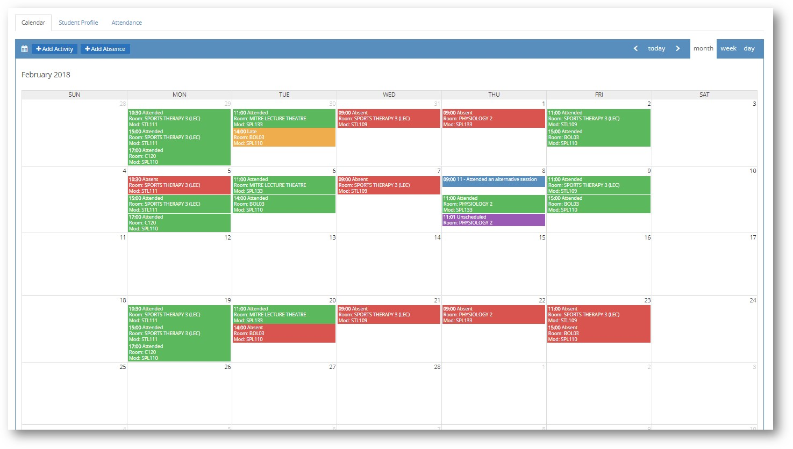

Campus Life

school church
This is a school church.

school auditorium
The School Auditorium is where the school events occur.
Achievements
Inter School Debate On Environment Pollution

Won the BBC's young Writer's Award In 2022
The environment in Barham Primary School is fantastic and above level for a school with 1000 students.
Inter School Football Award

Came second in inter soccer school Football competition
Goes against Stonebridge as their nemesist and has a high win rate.
Inter Science Competititon Award

Won second place for inter school science project competition.
This achievement was honoured by the students and teachers and it was hung up in the main hall.
What's New
-
New School Canteen
The food options and responsibilities to consider, canteens must be better organised and more efficient than they have been in the past. Online menus with photographs of the meals prepared, and detailed descriptions of their ingredients help both students and parents make the right nutritional choices. Each student or staff serber accesses the canteen could be provided with a School Canteen Account on the school website that keeps tr of their previous meal choices and any dietary requiresents they may have. ordering online by ticking a and paying for meals online can eliminate all the fuss of money handling, making it safe for staff and students alike. Here again, diversity is the key. -
Implemented Online Attendance Management System
1. Accuracy Humans are prone to error, even If we provide them with supporting computational devices. Autonated attendance management systems ensure accurate time records and minimize the inevitable and costly errors with manual data entry, This accurate data thereby helps to provide accurate performance and payroll data.
2. Economics Have you ever thought that attendance management systems could control costs? It saves money by putting an end to inaccurate time reporting, buddy punching, absenteeism, tardiness, time abuse, and overpayment. As a matter of fact, a study done by the Axslus Group found that large organizations save up to $1,600 per exployee after Implementing autonated attendance management systems.
3. Productivity / Efficiency Monitoring and managing attendance manually can be a time-consuming, laborious, and expensive al It takes time to process paper sheets and time cards, create schedules, authorize leave and overtine, and create payroll manually. Free up precious administration time with an autonated systen that does it all for you, from keeping track of employee hours to autonatically importing information into your payroll systen. The time effort saved combined with data accuracy helps in optimizing the us of resources which lead to increased productivity and improves profits. And many more like Visibility / Insights, Hassle Free Workfion Flexibility, Integration / Configuration, Real-time tracking. Security, and Compliance